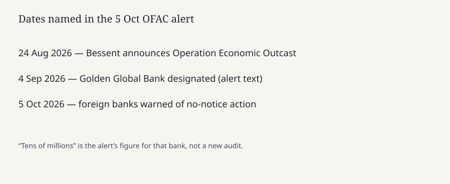

Washington · Sanctions · 5–6 October 2026
Treasury told foreign banks they may be sanctioned without notice for Iran business

What the desks agree
On Monday 5 October 2026 the U.S. Treasury’s Office of Foreign Assets Control published an alert to foreign financial institutions that continue to do business with Iran or with Iran’s financial sector. Reuters’ headline is the operational sentence: those institutions may be sanctioned without advance notice. The alert text, circulated with the dateline 5 October, says they “could be targeted at any time without advance notification” and should “take immediate action to terminate such activity and relationships.” The program name in the alert is Operation Economic Outcast.
The alert ties the warning to steps already announced. It says Secretary Scott Bessent announced the operation on 24 August 2026, and that Treasury expanded secondary-sanctions risk under Executive Order 13902, the order on additional sectors of the Iranian economy. It says that on 4 September 2026 Treasury designated Türkiye-based Golden Global Bank and its subsidiaries for facilitating tens of millions of dollars of transactions for the Islamic Revolutionary Guard Corps-Qods Force and for providing services to Iranian banks. “Tens of millions” is the alert’s figure for that designation, not a new audit published on Monday.
What the alert threatens, in its own words
Foreign banks that provide services to Iranian banks, or to their subsidiaries or branches in third countries, “risk being sanctioned for operating in or supporting sanctioned sectors of Iran’s economy.” The alert also says they could face civil and criminal enforcement penalties if Iran-related transactions cause U.S. persons, including U.S. banks, to violate sanctions. A further condition named in Reuters’ account is the possible loss of correspondent or payable-through accounts in the United States. Those are legal consequences OFAC is pointing at. They are not a list of banks newly named on Monday. The alert is a notice of risk, not a designation annex.
Reuters does not quote a foreign bank’s reply. No piece in this set counts how many institutions still clear Iranian payments. Absence of a count is part of the story: the action is a warning, and the measurable follow-through would be later designations or account closures, which are not in Monday’s text.
How secondary sanctions work, briefly
A primary sanction blocks U.S. persons from dealing with a listed target. A secondary sanction tells a non-U.S. bank that it can lose access to the U.S. financial system for dealing with that target even if no U.S. person is in the payment. Executive Order 13902 is the hook the alert cites for sectors of the Iranian economy. Correspondent banking is the lever: most cross-border dollar payments touch a U.S. account somewhere. Threatening that account is how a notice in Washington reaches a desk in a third country. None of that mechanism requires treating the alert as proof that any named bank ignored it.
The Iran file this week also includes battlefield reporting from Yemen and Gulf export figures in a Reuters morning note. Those are separate stories. The Treasury alert does not claim that airport strikes in Jazan were financed through Golden Global Bank. Joining them would be an inference the documents do not make.
What this story is not
It is not a new statute. It is not a designation of every foreign bank that has ever touched an Iranian payment. It is not a court judgment. Bessent’s name appears as the official who announced the August operation; the alert is the agency’s voice. The photograph is the Treasury building, an exterior, not the PDF. The chart is only the three dates the alert itself uses.
The Monday fact is the notice: no-advance-warning language, the operation name, the August and September antecedents, and the correspondent-account lever. Who actually exits Iranian business is not yet a table.

What remains unchecked
The alert does not name the foreign banks still holding Iranian correspondent lines. It does not publish a dollar total for Monday. Golden Global’s “tens of millions” remains a September designation figure. Whether any bank closed an account overnight is a compliance fact these pieces do not report. Executive Order 13902 is cited as authority; the alert text available through the wire is not a full restatement of the order’s definitions. A compliance officer would still read the order and the 4 September designation, not only the warning paragraph.
Secondary sanctions are a policy instrument with a track record of over-compliance: banks often exit more business than the legal minimum. That behaviour is described in years of sanctions reporting. It is not a finding that any particular bank did so on 5 October. The photograph of the Treasury building is an exterior from the Commons file, not a picture of the alert.
Source articles and scores
| Outlet | Headline | T | N | C |
|---|---|---|---|---|
| FDD overnight brief | October 6, 2026 — Treasury alert on foreign banks and Iran | 80 | +18 | 70 |
| Reuters | US says foreign financial institutions doing business with Iran may be sanctioned without notice | 95 | 0 | 98 |
| Reuters via The News | US warns banks supporting Iran they could be sanctioned at any time without notice | 92 | 0 | 94 |
FDD’s brief is a one-line digest of the Reuters alert, with a policy frame, so truthfulness is lower than the wire. Reuters quotes the notice and does not add unnamed banks. The News reprint tracks the wire.